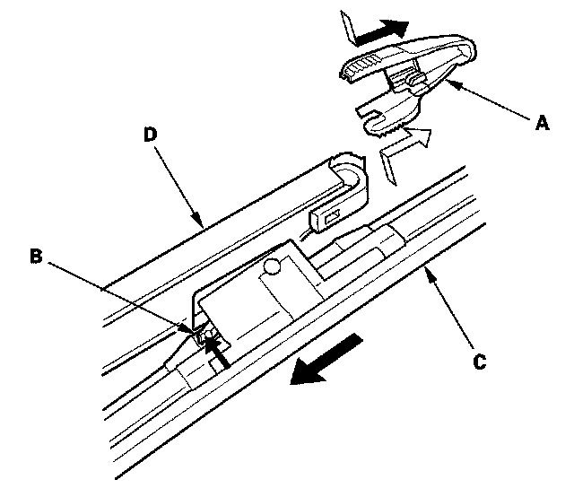
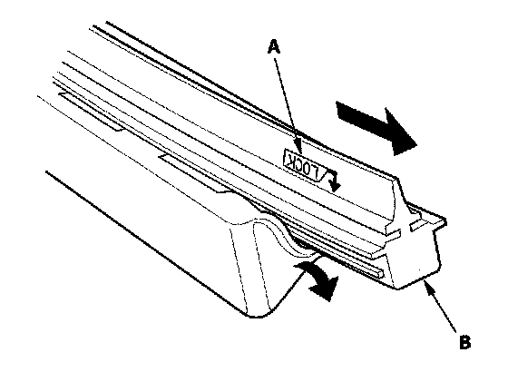

4-Door
Wiper Blade Replacement4-door
1. Lift the wiper arm off the windshield, raising the driver's side first, then the passenger's side.

2. Remove the cover (A), by squeezing the two tabs and pulling it straight out.
3. Press and hold the tab (B) and slide the wiper blade (C) toward the tabs until it releases from the wiper arm (D).

4. Find the side of the blade labeled "LOCK" (A), then pull back the end of the blade and slide out the old rubber (B).
5. Install a new rubber in the reverse order of removal.
6. Install the wiper blades onto the windshield wiper arms in the reverse order of removal.
7. Test by turning on the wipers. If the blades slip, turn off the wipers and seat the attachments more firmly.